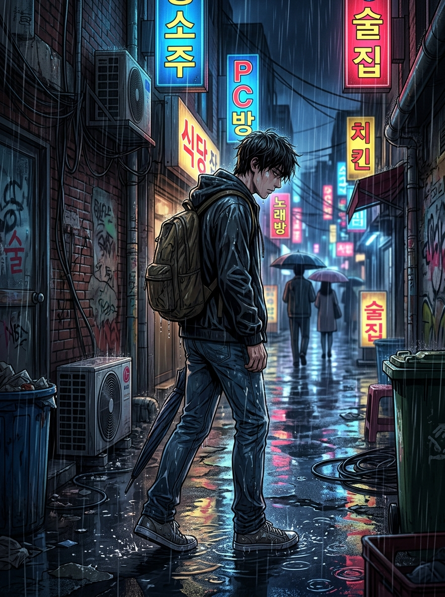
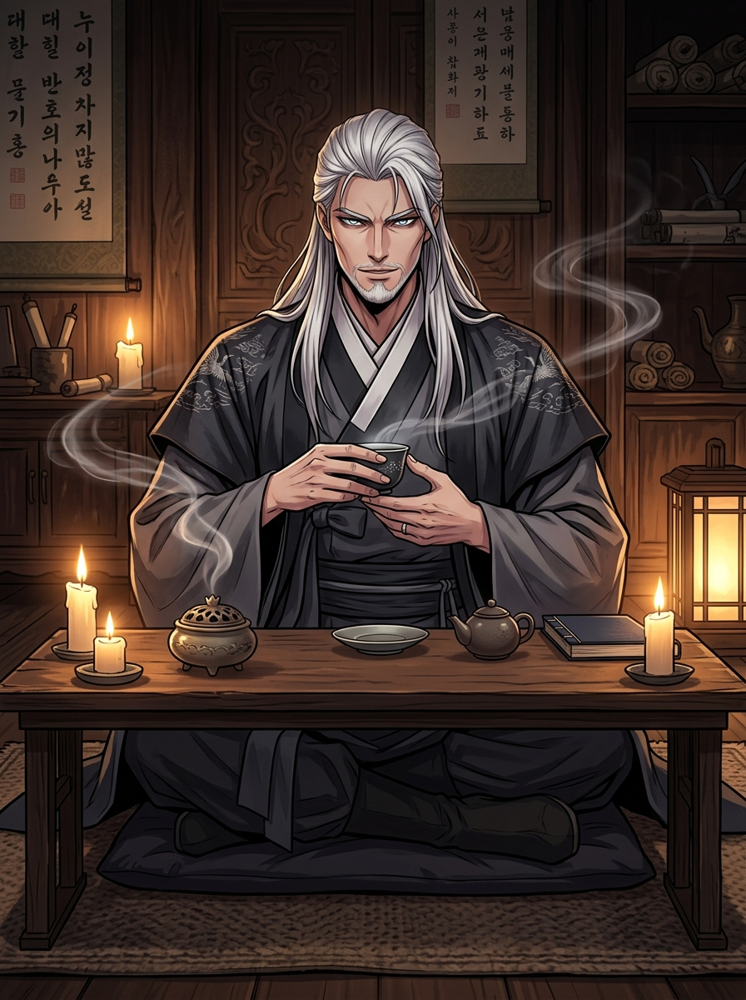
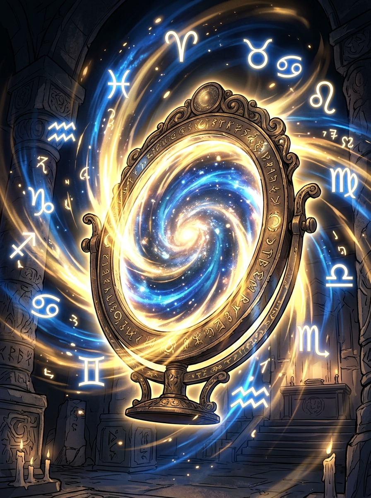

동양 정통 명리학 × 샤머니즘 신점 혜안 × 칼 융 심리원형 & 7대 차크라
"두 영혼이 마주하여 천명의 불꽃을 튀기니, 맺어질 인연인지 스쳐갈 업장인지 도인이 낱낱이 비추어주마."
두 사람의 4주 8자와 자미두수 명궁·부처궁을 입체 교차하여 정신적·현실적 케미와 오행 상호 보완도를 촌철살인으로 투시합니다.
"마음속 응어리와 깊은 고민을 숨김없이 털어놓거라. 사주와 하늘의 별을 비추어 직설로 답하마."
질문자의 사주 원국과 황실 자미두수 성반을 앵커로 고정하여, 피상적 답변이 아닌 촌철살인의 도인 공수를 실시간으로 내립니다.
※ 로또, 주식 상한가, 코인, 도박 등 사행성 질문은 천기 누설 금기 규율에 의해 엄격히 차단됩니다.
쏟아지는 빗속... 야근과 빚, 꼬여버린 인간관계에 짓눌려
숨이 턱 끝까지 차올랐다.

"대체 내 인생은 어디서부터 잘못된 걸까...?
나한테도... 진짜 피어날 운명이라는 게 있기는 한 걸까?"
홀린 듯 발걸음이 닿은 깊은 밤 인왕산 자락.
짙은 안개 너머, 붉은 청사초롱 불빛 하나가 어둠을 가른다.
천 년의 시간을 머금은 흑와 전각 【천명루(天命樓)】.
그 육중한 문이 소리 없이 열리고 있었다.

"왔는가.
가슴에 시퍼런 비수를 품고 홀로 버텨온 자여."
"네 타고난 그릇은 만인을 이끌 황제급의 기운이거늘,
어찌 엉뚱한 곳에서 피를 흘리며 스스로를 갉아먹고 있었느냐."

"이 거울은 거짓을 비추지 않는다.
네 타고난 사주팔자와 하늘의 별을 비추어,
막힌 곳간을 열고 그대의 진짜 인연을 찾아주마."
※ 도인의 거울을 터치하면 천명의 문이 열립니다.
"혼자서 끙끙 앓지 말고 편하게 콕콕 찍어보거라. 네 앞길을 환히 밝혀주마."
띠와 대략적인 시간대만 칩으로 골라도, 50년 명리 만세력과 칼 융 무의식 체계가 결합되어 타고난 잠재력과 대운의 황금기를 오차 없이 풀어냅니다.
현허도인의 깊은 혜안으로 그대의 타고난 천명과 황금기 운세를 살피고 있습니다.
"말은 세상 차갑고 살벌하게 쏘아붙이지만, 뒤에서 몰래 내 편 챙겨주는 츤데레 끝판왕."
"차디찬 도심의 빗속에서 갈 길을 잃고 헤매던 영혼이여... 잘 찾아왔다. 그대의 가슴속에 품은 번뇌와 비수를 내가 똑똑히 보았느니라."
"천명루 처마 밑에 걸린 세 개의 청사초롱을 보아라. 그대의 곳간은 활짝 열렸으나, 마음의 등불이 잦아들었으니 불씨를 지펴야 하느니라."
"바둑판 위의 돌처럼, 그대의 운명에 얽힌 세 사람의 얼굴과 초성을 짚어주마. 백돌은 전생 배필이요, 적돌은 피해야 할 악연이니라."
"인연과 돈은 제자리에 가만히 앉아 기다린다고 오지 않는다. 그대의 오행을 살려줄 지도 위의 좌표로 발걸음을 옮겨라."
"천명 거울 속 흉살의 파동을 보았느냐? 골든타임 D-7일 안에 부적을 지니고 마음을 다잡지 않으면 구설과 손재수가 덮칠 수 있다."
"퇴근 후 아무것도 하기 싫어 유튜브 쇼츠만 멍하니 보다가 새벽 2시에 잠드는 만성 피로 모드."
상대방이 내 개인 영역을 침범하면 급격히 피로해지며 동굴로 숨는 단절 회피형 성향.
적금 넣으면 속 터지는 타입. 판의 흐름을 읽고 코인/스윙 등 한 방이 터지는 곳에 과감히 베팅.
학술적 4주 8자 십성표, 7대 차크라, 육감 헥사곤, 11대 천기 챕터 상세 리포트가 준비되어 있습니다.
그대의 사주 원국에 깃든 오행과 신살의 흐름을 투시하여, 막힌 곳간과 뚫려야 할 기운의 밝기를 진단합니다.
금전의 혈맥이 열려 곳간에 재물이 차곡차곡 쌓일 길운입니다.
귀인의 기운이 다가오고 있으나 조급함을 버려야 인연이 맺어집니다.
신체 통증과 흉살의 파동이 감지되니 기혈의 순환과 휴식이 절실합니다.
이 시기 안에 살풀이 개운 비책을 실천하지 않으면 칼과 쇠, 구설수의 파동이 삶을 덮칠 수 있습니다.
바둑알을 탭하면 전생의 배필, 현실 조화 인연, 그리고 피해야 할 악연의 【이름 초성 · 키 · 직업 · 띠 · 외모】가 차례로 공개됩니다.
사주의 부족한 오행을 채우고 귀인을 조우할 수 있는 지도 위의 실제 좌표입니다.
| 구분 | 시주 (時柱) | 일주 (日柱) | 월주 (月柱) | 년주 (年柱) |
|---|---|---|---|---|
| 천간 십성 | - | 일원(나) | - | - |
| 천간 (天干) | - | - | - | - |
| 지지 (地支) | - | - | - | - |
| 지지 십성 | - | - | - | - |
| 12운성 | - | - | - | - |
| 지장간 | - | - | - | - |
사주팔자 신살과 오행 편중으로 산출된 6대 영적 감각
보이지 않는 세계와 감응하는 통로 (최대 4개)
북극성을 상징하는 제왕의 별 자미성(紫微星)을 필두로, 하늘의 14개 주성과 12개 인생 궁(宮)을 입체 투시한 황실의 운명 지도입니다.
각 영역을 누르면 도인의 깊은 직설 풀이와 【잘 풀렸을 때 천운 vs 안 풀렸을 때 악운】의 극단적 대조를 확인할 수 있습니다.
재물(財), 직업/이직(業), 건강(體), 대운 황금기(運), 운명의 갈림길(命) 52장 완전판 보고서
🔒 결제 즉시 모든 잠긴 챕터가 100% 영구 공개됩니다.
1회 결제로 평생 무제한 열람 및 PDF 저장 권한 부여
스마트폰에 저장하거나 SNS(인스타/카톡)에 공유하여 만복을 불러오세요.
매일 1회 출석 도장을 찍으세요. 스탬프 2개당 1:1 천기 심층 문답 1회권(1,200원 상당)을 즉시 지급합니다!
※ 출석 도장은 매일 자정(00:00)에 갱신되며, 질문권은 1:1 천기 문답소에서 즉시 사용 가능합니다.
비 내리는 도심의 차가운 빌딩 숲...
풀리지 않는 빚과 상처뿐인 인연에 짓눌려, 그대는 길을 잃고 비틀거리고 있었다.
짙은 안개 낀 산자락 너머, 붉은 청사초롱 불빛 하나.
천 년의 시간을 머금은 흑와 전각 【천명루(天命樓)】의 육중한 문이 서서히 열린다.
촛불 그림자 사이, 도포를 두르고 앉은 백발의 노인.
천기를 꿰뚫어 보는 서늘한 눈빛의 【현허도인(玄虛道人)】이 찻잔을 든 채 그대를 응시한다.
※ 도인의 신비로운 거울을 들여다보고 타고난 천명을 밝히십시오.